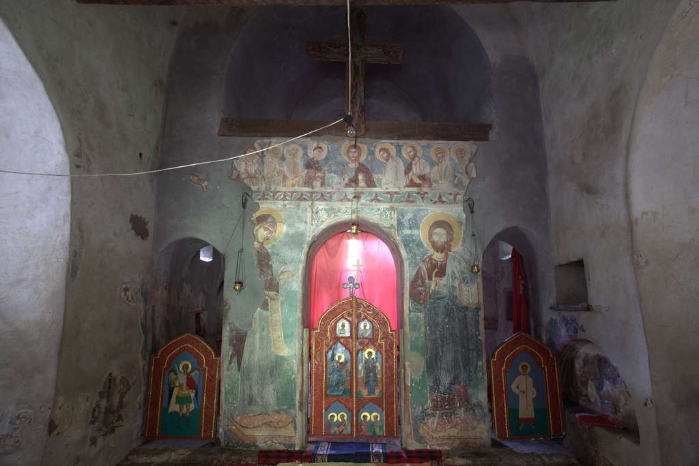
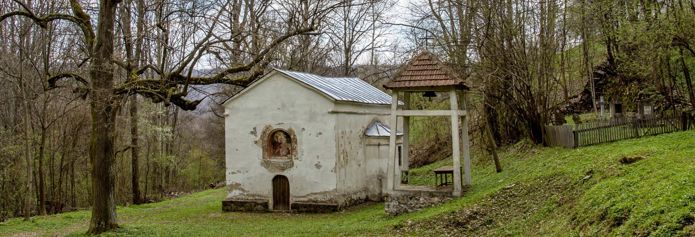
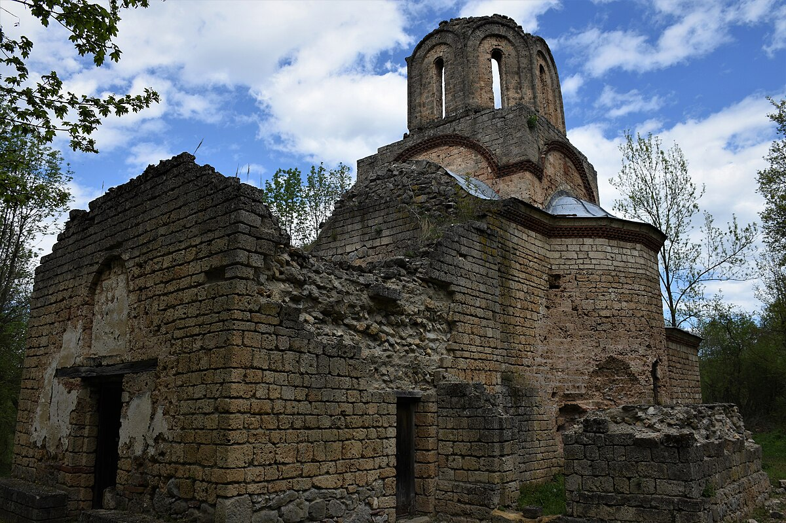

Манастири
Манастир Крепичевац

Манастир Крепичевац налази се 4 километра северно од села Јабланица, у живописном пределу Радованске реке. Манастир Крепичевац је грађен почетком петнаестог века, у периоду када су грађене скромне задужбине на простору Тимока и Мораве. Зидана је од камена, и малтерисана. То је мала једнострана грађевина, без кубета. Живописана је, али су само мање површине живописа сачуване. Најбоље су сачувани делови фресака у припрати, где се лево од улаза налази ктиторска композиција. Остали сачувани делови живописа, налазе се у олтару и наосу.

Манастир Крепичевац има зидани иконостас са неколико сачуваних икона: Христ, Богородица, Св. Јован, Благовести.
Манастир Лапушња

Манастир Лапушња налази се у атару села Кривог Вира и посвећена је Светом Николи. Данас је Лапушња полусрушени манастир, а некада је представљао својеврсну знаменитост. Црква манастира Лапушња је била катедрала за целу околину. У њој је стално боравио епископ. Манастир Лапушња се први пут спомиње у турским пописима 1455. године. Значи да је на месту садашње, већ била старија, вероватно из четрнаестог века, па порушена. Лапушња има тролисну основу, са високим кубетом који доминира над читавом грађевином. Рађена је по узору на сакралне грађевине Моравске школе.
Од живописа је сачувана делимично ктиторска композиција на којој су војвода Радул и кнез Богоје, који држи модел цркве. Иза Богоја је госпођа Мара, а иза Радула његова жена Наталија. Манастир је активно деловао до краја седамнаестог века.